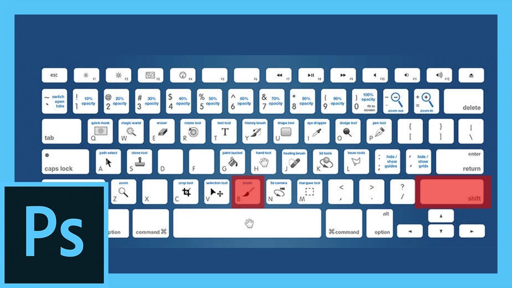

Vista:
Ctrl + Y = Colores de prueba
Ctrl + + = Aumentar
Ctrl + – = Reducir
Ctrl + O = Encajar en pantalla
Ctrl + Alt + O = Vista pixeles reales al 100%
Doble clik en mano = Encajar en pantalla
Doble clik en zoom = Vista pixeles reales al 100%
Ctrl + H = Mostrar extras
Ctrl + R = Mostrar / ocultar reglas
Ctrl + ; = Ajustar
Ctrl + Alt + ; = Bloquear guías
Doble click en guía = Opciones de guías y cuadriculas, color e incrementos
Ctrl + Tab = Cambia de ventana entra las ventanas abiertas
Tab = Muestra / oculta todas las barras de herramientas y paletas abiertas
Mayús + Tab = Muestra / oculta todas las paletas excepto herramientas y barra opciones
Bonus: Shift +
Pulsando Shift (Mayús) + la tecla de la herramienta obtenemos la variante de dicha herramienta.
